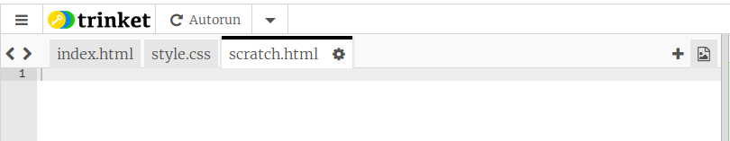
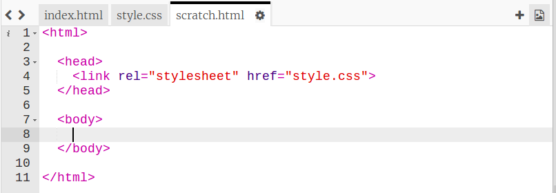
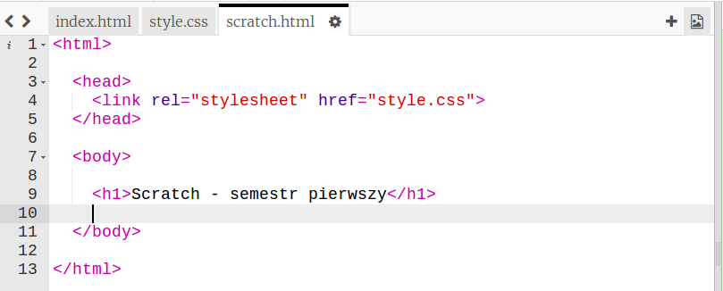
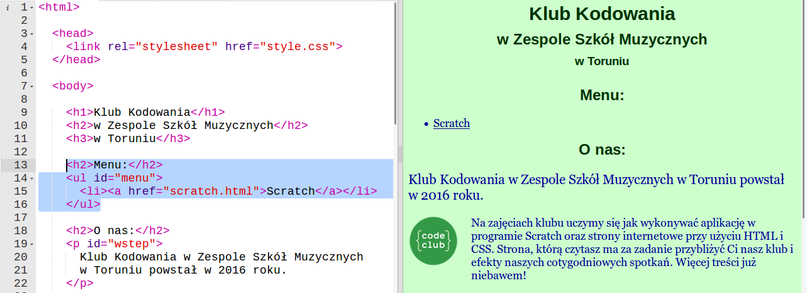
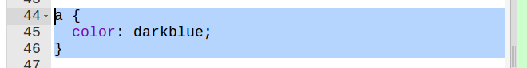
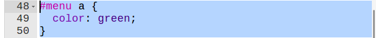
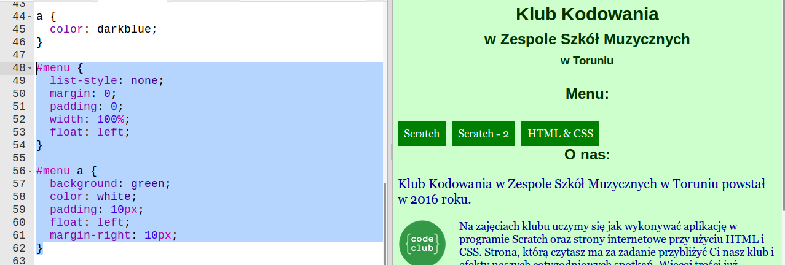

Wstęp
Dzisiaj nauczymy się jak dodać nowe podstrony do naszej strony internetowej i jak zbudować menu dla łatwiejszej nawigacji po naszej stronie.
Dodanie podstron
Zadania do wykonania
-
Nasza strona się rozrasta. Jeśli na stronie głównej umieścimy wszystkie informacje, stanie się ona nieczytelna, lepiej podzielić je na kilka podstron. Nie masz pomysłu na to, co może znaleźć się na tych podstronach?
Jeśli prowadzisz stronę o grach komputerowych, każda z nich może mieć podstronę z dokładnym opisem, oceną, obrazami z gry.
Jeżeli robisz stronę www o kotach, dodatkowe podstrony mogą pomóc Ci opisać wiele ras kotów.
Jeśli Twoja strona opowiada o klubi piłkarskim - możesz umieścić jego skład na osobnej podstronie, albo ostatenie mecze lub tabelę rozgrywek.
-
W naszej przykładowej stronie poświęcej podstronę dla każdego semstru zajęć, będę musiał więc utworzyć cztery podstrony, ale zacznę od scratcha. Aby utworzyć podstronę musisz dodać nowy plik html, np:

Stronę nazwałem scratch.html. Pamietaj o rozszerzeniu
htmldla Twojej nowej strony, inaczej przeglądarka nie będzie wiedziała czym jest Twoja strona i może ona nie działać tak jak tego oczekujesz. -
Strona jest pusta, marny z niej pożytek. Dodajmy treść. Najłatwiej będzie Ci skopiować zawartość zakładki
index.html, wkleić ją na nową zakładkę i oczyścić z niepotrzebnych informacji. Prawdopodobnie będziesz musiał skasować wszystko, co znajduje się pomiędzy znacznikamibody:
-
Dodajmy przykładową treść strony. Jeszcze nie możesz jej obejrzeć, więc dodaj tylko tytuł strony, resztę dodamy później:

Zapisz swój projekt
Dodanie menu
Zadania do wykonania
-
Mamy już fragment naszej nowej strony, ale jak się do niej dostać? Najprościej będzie utworzyć menu na stronie głównej.
Menu to lista linków. Znamy już znacznik listy
ul, znacznik elementu listylii znacznik odnośnika (linka)a. Użyjmy ich. Przejdź do zakładkiindex.htmli dodaj kod dla Twojego menu, w naszym przykładowym projekcie wygląda to tak:
-
Pamiętaj, żeby w Twoim kodzie atrybut
hrefdla odnośnika miał taką wartość jak nazwa nowo dodanej podstrony.Kliknij na swój link, działa? Powinieneś zobaczyć nową stronę z tytułem, który dodałeś wcześniej. Jeśli tak się nie stało zapytaj prowdzącego zajęcia co może być przyczyną problemów.
-
Wiesz, że Twoje odnośniki w menu mogą wyglądać inaczej niż reszta odnośników? Pamiętasz jak stylowaliśmy odnośniki? Wyglądało to tak:

Taki kod ostyluje wszystkie odnośniki na Twojej stronie, ale my chcemy, żeby odnośniki w menu wyglądały inaczej. Można to osiągnąć stylując tylko te odnośniki, które znajdują się w elemencie o id "menu", w ten sposób:

Widzisz różnicę? Taki kod mówi przeglądarce: znajdź element o id "menu" (
#menu), w nim poszukaj wszystkich elementówai dla nich zastosuj zielony kolor tekstu. Pamiętaj, żeby pomiędzy#menuaaznalazła się jedna spacja przerwy. -
Ostylujmy nasze menu:

-
Powyżej widzisz pewnie kilka nowych styli, oto wyjaśnienie:
list-style: nonesprawia, że elementy listy nie mają kropki, którą miały wcześniej.marginipaddingto odpowiednio odstępy zewnętrzne i wewnętrzne elementu. Odstępy zewnętrzne mówią przeglądarce jak daleko od innych elementów ma się znaleźć ten, który stylujesz. Odstępy wewnętrzne sprawiają, że treść elementu jest odsunięta od jego krawędzi.margin-rightto prawy odstęp zewnętrzny, odstępy możesz definiować osobno dla każdej z czterech krawędzi elementu.
Zapisz swój projekt
Treść twojej nowej podstrony
Potrafisz już dodać podstronę, dodaj więc do niej treść i ostyluj ją. Pokaż swoją stronę prowadzącemu zajęcia, pokaż ją też innym uczestnikom, czy strona im się podoba? Czy mają jakieś uwagi?
Chcesz zobaczyć, jak wygląda nasza przykładowa strona? Oto ona!